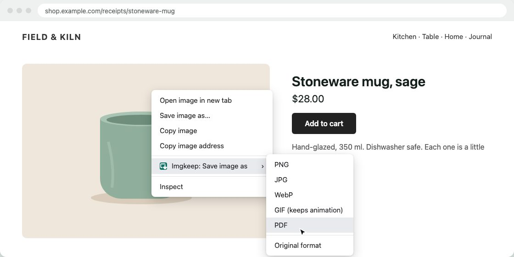

How to save an image as a PDF in Chrome
Short answer
Right-click the image, choose Imgkeep: Save image as, then PDF, for a one-page PDF exactly the size of the image. Without an extension, open the image in its own tab, press Ctrl+P (Cmd+P on a Mac) and set Destination to Save as PDF. The image then sits on a paper-sized page, with margins unless you turn them off.
Updated
How do I save an image as a PDF with Chrome alone?
Chrome has no "save image as PDF" option, but its print window can make one.
- Right-click the image and choose Open image in new tab.
- In that tab, press Ctrl+P (Windows) or Cmd+P (Mac).
- Set Destination to Save as PDF.
- Under More settings, set Margins to None to cut the white border.
- Click Save.
Nothing to install. The catch: the PDF is a paper-sized page (A4 or Letter), so the image sits on it with white space around it, and a big image may be shrunk to fit.
Can I use an app I already have?
Windows: Photos
- Save the image, then open it in Photos.
- Press Ctrl+P and choose Microsoft Print to PDF as the printer.
- Click Print, then choose where to save the PDF.
Mac: Preview
- Save the image, then open it in Preview.
- Choose File › Export as PDF.
How do I save an image as a PDF in one step?
An extension can build the PDF from the image as you save it, straight from the right-click menu. It runs in your browser, so pick one you can trust (how to check an image extension is safe). Here's how it works with ours.
Our extension
Imgkeep
- Add Imgkeep to Chrome from the Chrome Web Store.
- Right-click the image and choose Imgkeep: Save image as.
- Pick PDF.

You get a one-page PDF exactly the size of the image, with no border. Photos are stored as JPEG inside, using your JPG quality setting; images with a transparent background are stored without loss and keep their transparency. It works with WebP and AVIF too, and an animation becomes its first frame. If you've set a maximum width in Options, wider images are scaled down first. Conversion happens on your computer; nothing is uploaded. Free and open source.
Add Imgkeep to Chrome — free Works in Chrome 116 and newer. Also for Microsoft Edge.What about online converters?
Have image files already? Our Free Image Converter turns each one into a one-page PDF in your browser, without uploading: pick PDF.
They work, but you upload the image to someone else's server. Think twice for receipts, IDs or anything else private.
Related guides
- Why Chrome saves images as WebP
- How to save WebP as JPG or PNG
- How to save AVIF as JPG or PNG
- Chrome saves images as JFIF? How to get JPG
- How to save an animated WebP as a GIF
- A safe alternative to Save image as Type
- When right-click won't save an image
- How to get an image from the web into Canva, Figma or Google Slides
Questions
Why is there a white border around my image in the PDF?
Print to PDF puts the image on a paper-sized page, like A4 or Letter, with margins. Set Margins to None to reduce it. For a page exactly the size of the image, use a tool that builds the PDF from the image itself.
Does the PDF lower the image quality?
It depends on the tool. Printing can rescale the image to fit the page. A PDF built from the image keeps its pixel size, though photos are usually stored as JPEG inside to keep the file small.
Can I put several images in one PDF?
Not with the one-image methods on this page. On a Mac, select several images in Preview's sidebar and print them to one PDF. On Windows, select several images in File Explorer, right-click, choose Print (on Windows 11, under Show more options) and pick Microsoft Print to PDF.